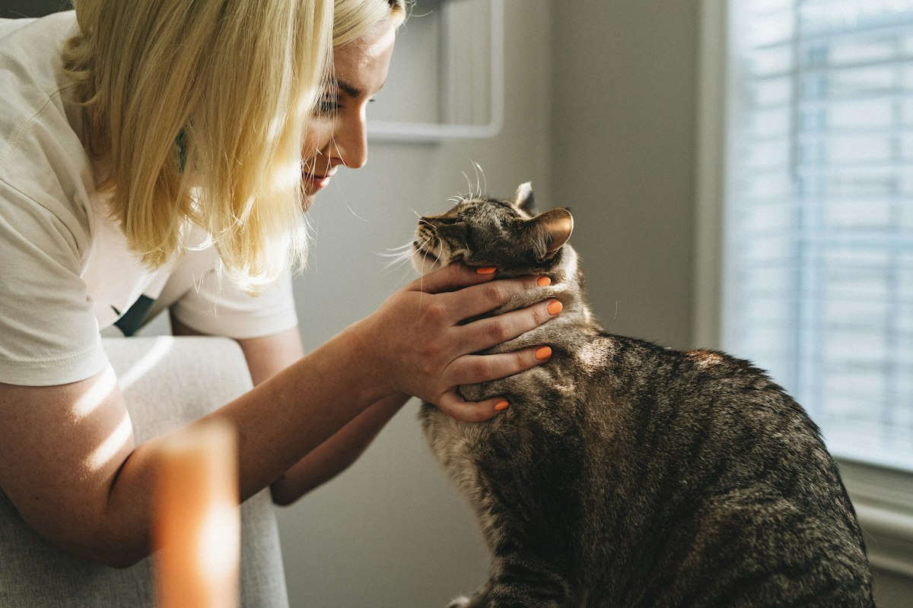

Clínica veterinaria y forrajera en Chicoloapan. Consulta, vacunas, medicamentos y alimento en un solo lugar, con atención cercana y precios justos.
Agendar por WhatsApp55 1551 3708Atención para perros, gatos y especies de producción.
Revisión completa, diagnóstico y tratamiento para tu mascota.
Esquemas completos para cachorros, adultos y ganado.
Asesoría para borregos, cerdos, aves y bovinos de traspatio.
Medicamentos e insumos para mascotas y especies de producción.
Croquetas, alimento balanceado y suplementos.
Baño, corte de uñas y limpieza de oídos.

Somos un negocio local de Chicoloapan que entiende las necesidades de las familias y de quienes crían animales. Te orientamos con honestidad y te ayudamos a encontrar el tratamiento y el alimento adecuados.
✔ Atención de lunes a domingo
✔ Mascotas y especies de producción
✔ Farmacia y alimento en el mismo lugar
Calificación 4.6 ★ en Google
★★★★★
“Muy buena atención, el doctor explica todo con paciencia y los precios son accesibles.”
— Cliente en Google★★★★★
“Encuentras de todo para tus animales: medicina, alimento y buen consejo.”
— Cliente en Google★★★★★
“Atendieron a mi perrita rápido y se recuperó muy bien. Recomendados.”
— Cliente en GoogleResolvemos tus dudas más comunes.
Lunes a sábado de 10:00 a 20:00. En domingo te sugerimos confirmar por teléfono.
Puedes llegar sin cita en nuestro horario, pero te recomendamos agendar por WhatsApp o al 55 1551 3708 para atenderte sin espera.
Estamos en Calle 10 de Abril Lt 23, Col. Emiliano Zapata, Chicoloapan. Usa el botón «Cómo llegar» para abrir la ruta en Google Maps.
Recomendamos iniciar el esquema entre las 6 y 8 semanas (parvovirus, moquillo y múltiple en perros; triple felina en gatos) y la antirrábica a partir de los 3 meses, con refuerzos anuales. En consulta te damos el calendario exacto.
En cachorros cada 15 días hasta los 3 meses y después cada 3 meses en adultos; la desparasitación externa (pulgas y garrapatas) suele ser mensual.
Exploración física completa, revisión de peso, piel, ojos, oídos y dentadura, diagnóstico y plan de tratamiento explicado con claridad.
Sí. Además de perros y gatos, damos asesoría y tratamiento para borregos, cerdos, aves y bovinos de traspatio, y contamos con medicamento y alimento para especies de producción.
Aceptamos efectivo y transferencia; pregunta por pago con tarjeta al agendar.
📍 Dirección: Calle 10 de Abril Lt 23, Col. Emiliano Zapata, 56390 Chicoloapan de Juárez, Edo. Méx.
📞 Teléfono: 55 1551 3708
| Lunes a sábado | 10:00 – 20:00 |
| Domingo | Confirmar por teléfono |